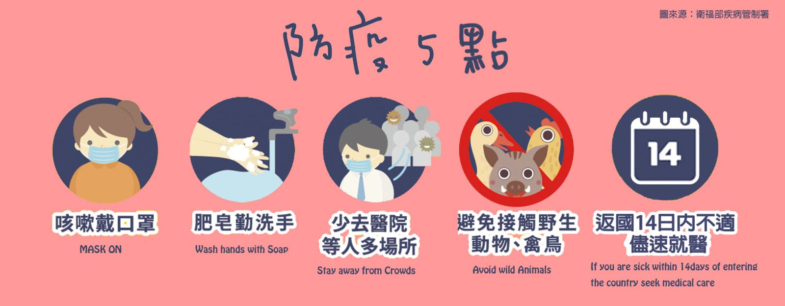

流感為急性病毒性呼吸道疾病，主要致病原為流感病毒，常引起發燒、頭痛、肌肉酸痛、疲倦、流鼻水、喉嚨痛及咳嗽等，但通常均在一週內會康復，流感病毒可分為A、B、C及D四種型別，其中只有A型及B型可以引起季節性流行。目前主要流行的季節性流感病毒有A型流感病毒的H3N2亞型與H1N1亞型，以及B型流感病毒的B/Victoria與B/Yamagata種系等4類。
而估計每年流行時，約有10%受感染的人有噁心、嘔吐及腹瀉等腸胃道症狀伴隨呼吸道症狀而來。流感之重要性在於其爆發流行快速、散播範圍廣泛及併發症嚴重，尤其是細菌性及病毒性肺炎。爆發流行時，重症及死亡者多見於老年人，以及患有心、肺、腎臟及代謝性疾病或免疫功能不全者。定期接種流感疫苗，是預防流感併發症最有效的方式。
流感為具有明顯季節性特徵之流行疾病，疫情的發生通常具有週期性，臺灣地區位處於熱帶及亞熱帶地區，雖然一年四季均有病例發生，但仍以秋、冬季較容易發生流行。自11月開始病例逐漸上升，流行高峰期多自12月至隔年3月，秋冬時節正值流感及流感併發重症病例數達到高峰的季節
流感病毒（Influenza virus），可分為A、B、C及D四種型別，其中只有A型及B型可以引起季節性流行。目前主要流行之季節性流感病毒型別為A/H3N2型、A/H1N1型，以及B型流感病毒的B/Victoria與B/Yamagata種系等4類。
人是季節性流感的主要傳染窩；但其他A型流感病毒亞型以禽鳥類(如鴨)及哺乳類(主要是豬)為主要宿主，病毒間可能因基因重組，進一步產生新型流感病毒而造成大流行。
主要經由感染者咳嗽或打噴嚏產生的飛沫傳染；由於流感病毒可短暫存活於物體表面，故亦可能經由接觸傳染。
流感的潛伏期通常為1-4天，平均為2天。出現併發症的時間則約在發病後的1-2週內。
症狀出現前1-2天即可能具傳染力，成人之傳染力可持續至症狀出現後3-5天，小孩則可達到7-10天。但免疫不全者排放病毒的時間則可長達數週或數月。
對於首次接觸的流感病毒，大人和小孩均具有相同的感受性；感染後可針對此次感染的病毒抗原產生免疫力，但是免疫力維持的期間及效力則視病毒抗原微變的狀況及感染的次數而定。流感疫苗可提供針對疫苗株的血清免疫反應，或是個體先前已感染之相關病毒型的追加免疫作用，但對於以前曾經流行的病毒型，其免疫力常因暴露史及年齡不同而有所差異。
讓我們一起打擊武漢肺炎